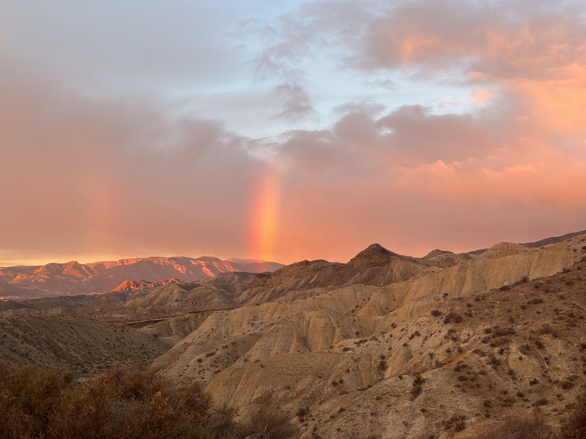
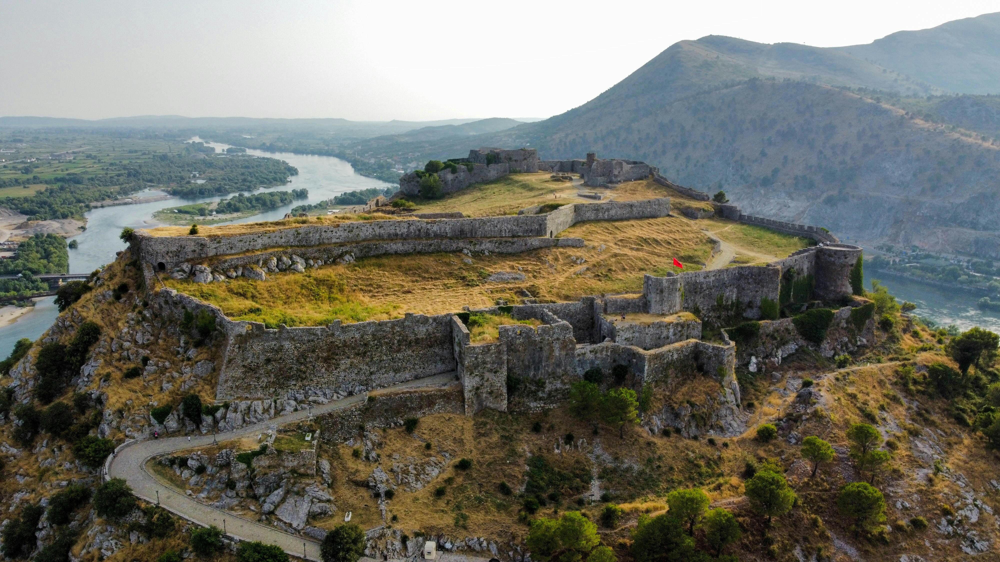
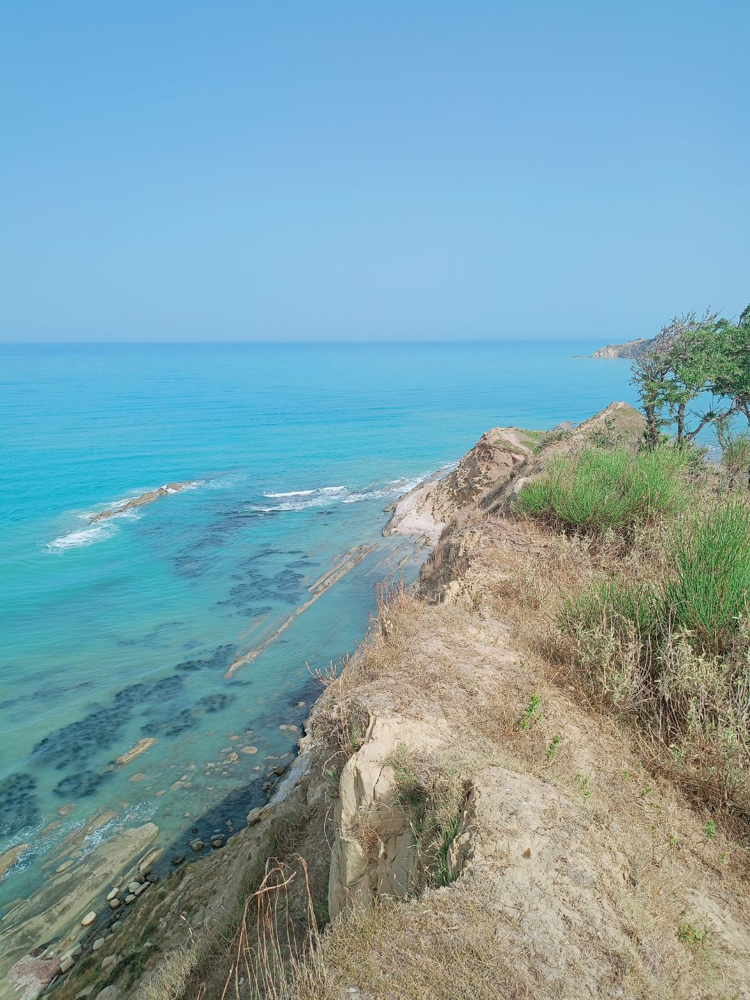

Początek wielkiej przygody, dzikie plaże i noc na krawędzi klifu
Wszystko zaczęło się w czerwcu. 12 czerwca – tuż przed oficjalnym zakończeniem roku szkolnego – musiałem urwać się ze szkoły, by ruszyć w drogę. Zanim jednak wyjechaliśmy, nawaliła skrzynia biegów w busie. Trzeba było czekać na nową część i zamawiać ją od nowa. Dla nas tydzień wyjazdu wydawał się wtedy ogromną wyprawą.
Ciekawostka geograficzna: Albania posiada potężne, dzikie pasma Gór Przeklętych (Albanian Alps), które należą do najbardziej niedostępnych i surowych formacji skalnych w Europie.


Po drodze zatrzymaliśmy się w Macedonii przy niezwykłym miejscu: lodowatym strumieniu pod górską skałą. Woda była tak zimna, że aż mroziła żyły w stopach. Gdy wjechaliśmy do Albanii, uderzył nas surowy, odizolowany klimat: brak cywilizacyjnych wygód i wszechobecna dzikość. Upalne lato spaliło mi plecy niemal do krwi przy granicy.
Z punktu widzenia psychologii ewolucyjnej, taki nagły brak cywilizacyjnego komfortu natychmiast wyłącza tryb automatyczny w mózgu i zmusza do pełnej czujności.
Pewnej nocy szukaliśmy miejscówki na dziko, jadąc po omacku przez trawy i piasek. Zaparkowaliśmy przy świetle latarki, nic nie widząc. Rano obudziliśmy się i zamarśliśmy – stałem na samym skraju klifu, tuż nad błękitnym morzem! Fale wymyły ze skał niesamowite naturalne formacje, w których zażywaliśmy kąpieli.
